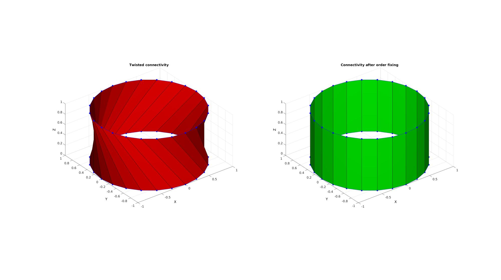
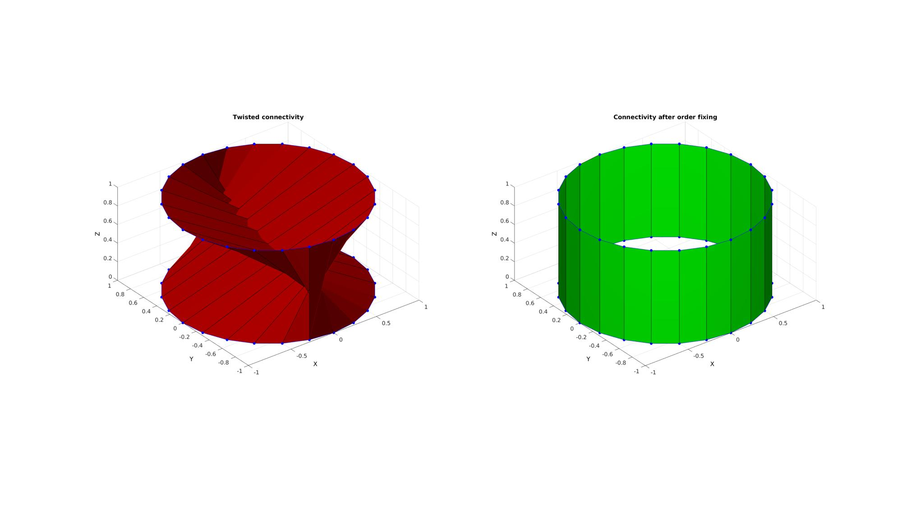

minPolyTwist
Below is a demonstration of the features of the minPolyTwist function
Contents
clear; close all; clc;
PLOT SETTINGS
figColor='w'; figColorDef='white'; fontSize=15; faceAlpha1=1; faceAlpha2=0.5; edgeColor=0.25*ones(1,3); edgeWidth=1.5; markerSize1=50;
Creating example curves.
%Creating circle 1 0-2*pi t=linspace(0,2*pi,25); t=t(1:end-1); x=sin(t); y=cos(t); z=zeros(size(x)); V1=[x(:) y(:) z(:)]; %Creating circle 2 0.25*pi-2.25 pi t=linspace(0.25*pi,2.25*pi,25); t=t(1:end-1); x=sin(t); y=cos(t); z=ones(size(x)); V2=[x(:) y(:) z(:)]; %Also distoring curve direction % V2=flipud(V2);
FIXING CURVE POINT ORDER TO MINIMIZE TWIST
[V2f,indSort]=minPolyTwist(V1,V2);
Plotting results
cFigure; subplot(1,2,1); title('Twisted connectivity','FontSize',fontSize); xlabel('X','FontSize',fontSize);ylabel('Y','FontSize',fontSize); zlabel('Z','FontSize',fontSize); hold on; % Create patch data to visualize twist X=linspacen(V1(:,1),V2(:,1),2)'; Y=linspacen(V1(:,2),V2(:,2),2)'; Z=linspacen(V1(:,3),V2(:,3),2)'; [F,V,~]=patchCylSurfClose(X,Y,Z,[]); hpy=patch('Faces',F,'Vertices',V,'EdgeColor','k','FaceColor','r','FaceAlpha',faceAlpha1); plotV(V1,'b.-','MarkerSize',25); plotV(V2,'b.-','MarkerSize',25); axis equal; axis tight; view(3); grid on; set(gca,'FontSize',fontSize); camlight headlight; drawnow; % Create patch data to vizualise twist X=linspacen(V1(:,1),V2f(:,1),2)'; Y=linspacen(V1(:,2),V2f(:,2),2)'; Z=linspacen(V1(:,3),V2f(:,3),2)'; [F,V,~]=patchCylSurfClose(X,Y,Z,[]); % Plotting results subplot(1,2,2); title('Connectivity after order fixing','FontSize',fontSize); xlabel('X','FontSize',fontSize);ylabel('Y','FontSize',fontSize); zlabel('Z','FontSize',fontSize); hold on; hpy=patch('Faces',F,'Vertices',V,'EdgeColor','k','FaceColor','g','FaceAlpha',faceAlpha1); plotV(V1,'b.-','MarkerSize',25); plotV(V2f,'b.-','MarkerSize',25); axis equal; axis tight; view(3); grid on; set(gca,'FontSize',fontSize); camlight headlight; drawnow;
EXAMPLE FOR FIXING TWIST AND DIRECTION
% Also distoring curve direction V2=flipud(V2); % Fixing flipped curve direction and order [V2f,indSort]=minPolyTwist(V1,V2);
Plotting results
cFigure; subplot(1,2,1); title('Twisted connectivity','FontSize',fontSize); xlabel('X','FontSize',fontSize);ylabel('Y','FontSize',fontSize); zlabel('Z','FontSize',fontSize); hold on; % Create patch data to vizualise twist X=linspacen(V1(:,1),V2(:,1),2)'; Y=linspacen(V1(:,2),V2(:,2),2)'; Z=linspacen(V1(:,3),V2(:,3),2)'; [F,V,~]=patchCylSurfClose(X,Y,Z,[]); hpy=patch('Faces',F,'Vertices',V,'EdgeColor','k','FaceColor','r','FaceAlpha',faceAlpha1); plotV(V1,'b.-','MarkerSize',25); plotV(V2,'b.-','MarkerSize',25); axis equal; axis tight; view(3); grid on; set(gca,'FontSize',fontSize); camlight headlight; drawnow; % Create patch data to vizualise twist X=linspacen(V1(:,1),V2f(:,1),2)'; Y=linspacen(V1(:,2),V2f(:,2),2)'; Z=linspacen(V1(:,3),V2f(:,3),2)'; [F,V,~]=patchCylSurfClose(X,Y,Z,[]); % Plotting results subplot(1,2,2); title('Connectivity after order fixing','FontSize',fontSize); xlabel('X','FontSize',fontSize);ylabel('Y','FontSize',fontSize); zlabel('Z','FontSize',fontSize); hold on; hpy=patch('Faces',F,'Vertices',V,'EdgeColor','k','FaceColor','g','FaceAlpha',faceAlpha1); plotV(V1,'b.-','MarkerSize',25); plotV(V2f,'b.-','MarkerSize',25); axis equal; axis tight; view(3); grid on; set(gca,'FontSize',fontSize); camlight headlight; drawnow;

GIBBON www.gibboncode.org
Kevin Mattheus Moerman, gibbon.toolbox@gmail.com
GIBBON footer text
License: https://github.com/gibbonCode/GIBBON/blob/master/LICENSE
GIBBON: The Geometry and Image-based Bioengineering add-On. A toolbox for image segmentation, image-based modeling, meshing, and finite element analysis.
Copyright (C) 2019 Kevin Mattheus Moerman
This program is free software: you can redistribute it and/or modify it under the terms of the GNU General Public License as published by the Free Software Foundation, either version 3 of the License, or (at your option) any later version.
This program is distributed in the hope that it will be useful, but WITHOUT ANY WARRANTY; without even the implied warranty of MERCHANTABILITY or FITNESS FOR A PARTICULAR PURPOSE. See the GNU General Public License for more details.
You should have received a copy of the GNU General Public License along with this program. If not, see http://www.gnu.org/licenses/.